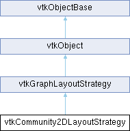

|
Etrek
|
|
Etrek
|
a simple fast 2D graph layout that looks for a community array on it's input and strengthens edges within a community and weakens edges not within the community. More...
#include <vtkCommunity2DLayoutStrategy.h>

Public Member Functions | |
| vtkTypeMacro (vtkCommunity2DLayoutStrategy, vtkGraphLayoutStrategy) | |
| void | PrintSelf (ostream &os, vtkIndent indent) override |
| void | Initialize () override |
| void | Layout () override |
| int | IsLayoutComplete () override |
| vtkSetClampMacro (RandomSeed, int, 0, VTK_INT_MAX) | |
| vtkGetMacro (RandomSeed, int) | |
| vtkSetClampMacro (MaxNumberOfIterations, int, 0, VTK_INT_MAX) | |
| vtkGetMacro (MaxNumberOfIterations, int) | |
| vtkSetClampMacro (IterationsPerLayout, int, 0, VTK_INT_MAX) | |
| vtkGetMacro (IterationsPerLayout, int) | |
| vtkSetClampMacro (InitialTemperature, float, 0.0, VTK_FLOAT_MAX) | |
| vtkGetMacro (InitialTemperature, float) | |
| vtkSetClampMacro (CoolDownRate, double, 0.01, VTK_DOUBLE_MAX) | |
| vtkGetMacro (CoolDownRate, double) | |
| vtkSetMacro (RestDistance, float) | |
| vtkGetMacro (RestDistance, float) | |
| vtkGetStringMacro (CommunityArrayName) | |
| vtkSetStringMacro (CommunityArrayName) | |
| vtkSetClampMacro (CommunityStrength, float, 0.1, 1.0) | |
| vtkGetMacro (CommunityStrength, float) | |
| Public Member Functions inherited from vtkGraphLayoutStrategy | |
| vtkTypeMacro (vtkGraphLayoutStrategy, vtkObject) | |
| void | PrintSelf (ostream &os, vtkIndent indent) override |
| virtual void | SetGraph (vtkGraph *graph) |
| virtual void | SetWeightEdges (bool state) |
| vtkGetMacro (WeightEdges, bool) | |
| virtual void | SetEdgeWeightField (const char *field) |
| vtkGetStringMacro (EdgeWeightField) | |
| Public Member Functions inherited from vtkObject | |
| vtkBaseTypeMacro (vtkObject, vtkObjectBase) | |
| virtual void | DebugOn () |
| virtual void | DebugOff () |
| bool | GetDebug () |
| void | SetDebug (bool debugFlag) |
| virtual void | Modified () |
| virtual vtkMTimeType | GetMTime () |
| void | PrintSelf (ostream &os, vtkIndent indent) override |
| void | RemoveObserver (unsigned long tag) |
| void | RemoveObservers (unsigned long event) |
| void | RemoveObservers (const char *event) |
| void | RemoveAllObservers () |
| vtkTypeBool | HasObserver (unsigned long event) |
| vtkTypeBool | HasObserver (const char *event) |
| vtkTypeBool | InvokeEvent (unsigned long event) |
| vtkTypeBool | InvokeEvent (const char *event) |
| std::string | GetObjectDescription () const override |
| unsigned long | AddObserver (unsigned long event, vtkCommand *, float priority=0.0f) |
| unsigned long | AddObserver (const char *event, vtkCommand *, float priority=0.0f) |
| vtkCommand * | GetCommand (unsigned long tag) |
| void | RemoveObserver (vtkCommand *) |
| void | RemoveObservers (unsigned long event, vtkCommand *) |
| void | RemoveObservers (const char *event, vtkCommand *) |
| vtkTypeBool | HasObserver (unsigned long event, vtkCommand *) |
| vtkTypeBool | HasObserver (const char *event, vtkCommand *) |
| template<class U, class T> | |
| unsigned long | AddObserver (unsigned long event, U observer, void(T::*callback)(), float priority=0.0f) |
| template<class U, class T> | |
| unsigned long | AddObserver (unsigned long event, U observer, void(T::*callback)(vtkObject *, unsigned long, void *), float priority=0.0f) |
| template<class U, class T> | |
| unsigned long | AddObserver (unsigned long event, U observer, bool(T::*callback)(vtkObject *, unsigned long, void *), float priority=0.0f) |
| vtkTypeBool | InvokeEvent (unsigned long event, void *callData) |
| vtkTypeBool | InvokeEvent (const char *event, void *callData) |
| virtual void | SetObjectName (const std::string &objectName) |
| virtual std::string | GetObjectName () const |
| Public Member Functions inherited from vtkObjectBase | |
| const char * | GetClassName () const |
| virtual vtkTypeBool | IsA (const char *name) |
| virtual vtkIdType | GetNumberOfGenerationsFromBase (const char *name) |
| virtual void | Delete () |
| virtual void | FastDelete () |
| void | InitializeObjectBase () |
| void | Print (ostream &os) |
| void | Register (vtkObjectBase *o) |
| virtual void | UnRegister (vtkObjectBase *o) |
| int | GetReferenceCount () |
| void | SetReferenceCount (int) |
| bool | GetIsInMemkind () const |
| virtual void | PrintHeader (ostream &os, vtkIndent indent) |
| virtual void | PrintTrailer (ostream &os, vtkIndent indent) |
| virtual bool | UsesGarbageCollector () const |
Static Public Member Functions | |
| static vtkCommunity2DLayoutStrategy * | New () |
| Static Public Member Functions inherited from vtkObject | |
| static vtkObject * | New () |
| static void | BreakOnError () |
| static void | SetGlobalWarningDisplay (vtkTypeBool val) |
| static void | GlobalWarningDisplayOn () |
| static void | GlobalWarningDisplayOff () |
| static vtkTypeBool | GetGlobalWarningDisplay () |
| Static Public Member Functions inherited from vtkObjectBase | |
| static vtkTypeBool | IsTypeOf (const char *name) |
| static vtkIdType | GetNumberOfGenerationsFromBaseType (const char *name) |
| static vtkObjectBase * | New () |
| static void | SetMemkindDirectory (const char *directoryname) |
| static bool | GetUsingMemkind () |
Protected Attributes | |
| int | MaxNumberOfIterations |
| float | InitialTemperature |
| float | CoolDownRate |
| Protected Attributes inherited from vtkGraphLayoutStrategy | |
| vtkGraph * | Graph |
| char * | EdgeWeightField |
| bool | WeightEdges |
| Protected Attributes inherited from vtkObject | |
| bool | Debug |
| vtkTimeStamp | MTime |
| vtkSubjectHelper * | SubjectHelper |
| std::string | ObjectName |
| Protected Attributes inherited from vtkObjectBase | |
| std::atomic< int32_t > | ReferenceCount |
| vtkWeakPointerBase ** | WeakPointers |
Additional Inherited Members | |
| Protected Member Functions inherited from vtkObject | |
| void | RegisterInternal (vtkObjectBase *, vtkTypeBool check) override |
| void | UnRegisterInternal (vtkObjectBase *, vtkTypeBool check) override |
| void | InternalGrabFocus (vtkCommand *mouseEvents, vtkCommand *keypressEvents=nullptr) |
| void | InternalReleaseFocus () |
| Protected Member Functions inherited from vtkObjectBase | |
| virtual void | ReportReferences (vtkGarbageCollector *) |
| vtkObjectBase (const vtkObjectBase &) | |
| void | operator= (const vtkObjectBase &) |
| Static Protected Member Functions inherited from vtkObjectBase | |
| static vtkMallocingFunction | GetCurrentMallocFunction () |
| static vtkReallocingFunction | GetCurrentReallocFunction () |
| static vtkFreeingFunction | GetCurrentFreeFunction () |
| static vtkFreeingFunction | GetAlternateFreeFunction () |
a simple fast 2D graph layout that looks for a community array on it's input and strengthens edges within a community and weakens edges not within the community.
This class is a density grid based force directed layout strategy. Also please note that 'fast' is relative to quite slow. :) The layout running time is O(V+E) with an extremely high constant.
|
overridevirtual |
This strategy sets up some data structures for faster processing of each Layout() call
Reimplemented from vtkGraphLayoutStrategy.
|
inlineoverridevirtual |
I'm an iterative layout so this method lets the caller know if I'm done laying out the graph
Reimplemented from vtkGraphLayoutStrategy.
|
overridevirtual |
This is the layout method where the graph that was set in SetGraph() is laid out. The method can either entirely layout the graph or iteratively lay out the graph. If you have an iterative layout please implement the IsLayoutComplete() method.
Implements vtkGraphLayoutStrategy.
|
overridevirtual |
Methods invoked by print to print information about the object including superclasses. Typically not called by the user (use Print() instead) but used in the hierarchical print process to combine the output of several classes.
Reimplemented from vtkObjectBase.
| vtkCommunity2DLayoutStrategy::vtkGetStringMacro | ( | CommunityArrayName | ) |
Get/Set the community array name
| vtkCommunity2DLayoutStrategy::vtkSetClampMacro | ( | CommunityStrength | , |
| float | , | ||
| 0. | 1, | ||
| 1. | 0 ) |
Set the community 'strength'. The default is '1' which means vertices in the same community will be placed close together, values closer to .1 (minimum) will mean a layout closer to traditional force directed.
| vtkCommunity2DLayoutStrategy::vtkSetClampMacro | ( | CoolDownRate | , |
| double | , | ||
| 0. | 01, | ||
| VTK_DOUBLE_MAX | ) |
| vtkCommunity2DLayoutStrategy::vtkSetClampMacro | ( | InitialTemperature | , |
| float | , | ||
| 0. | 0, | ||
| VTK_FLOAT_MAX | ) |
| vtkCommunity2DLayoutStrategy::vtkSetClampMacro | ( | IterationsPerLayout | , |
| int | , | ||
| 0 | , | ||
| VTK_INT_MAX | ) |
| vtkCommunity2DLayoutStrategy::vtkSetClampMacro | ( | MaxNumberOfIterations | , |
| int | , | ||
| 0 | , | ||
| VTK_INT_MAX | ) |
| vtkCommunity2DLayoutStrategy::vtkSetClampMacro | ( | RandomSeed | , |
| int | , | ||
| 0 | , | ||
| VTK_INT_MAX | ) |
Seed the random number generator used to jitter point positions. This has a significant effect on their final positions when the layout is complete.
| vtkCommunity2DLayoutStrategy::vtkSetMacro | ( | RestDistance | , |
| float | ) |
Manually set the resting distance. Otherwise the distance is computed automatically.